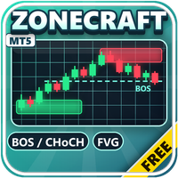
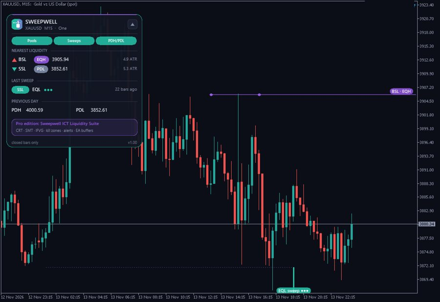
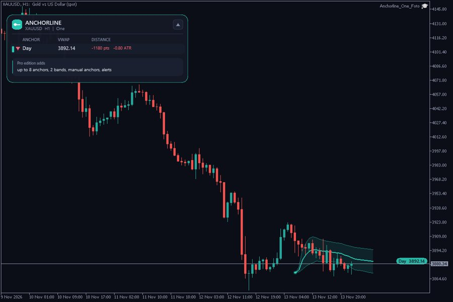
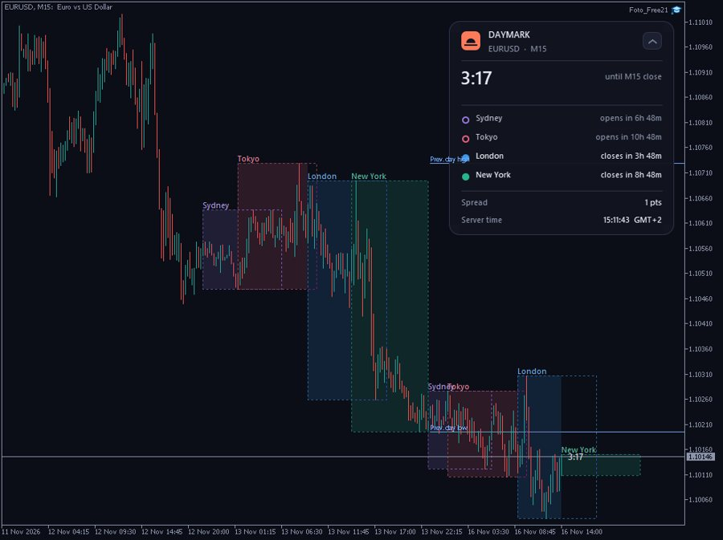
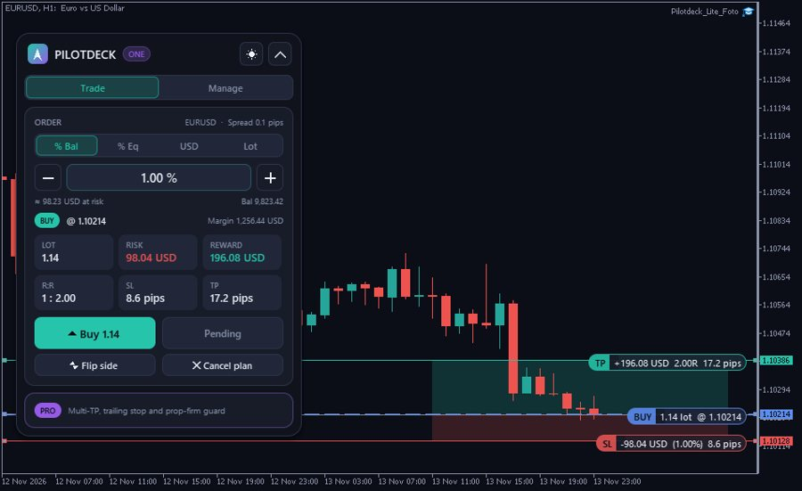
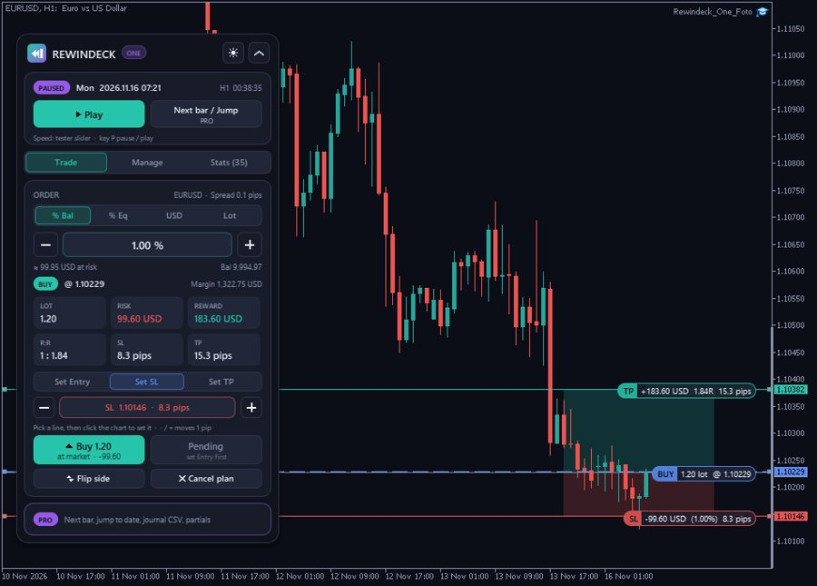
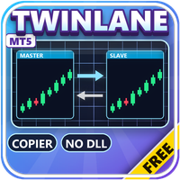

Zonecraft Structure
FREEIndicatorv2.3
Draws swing market structure (BOS / CHoCH) and fair value gaps with their fill level, plus a small dashboard. Calculated from closed candles only.
 PRO Pro version: Zonecraft SMC Suite – more features → MQL5 Market
PRO Pro version: Zonecraft SMC Suite – more features → MQL5 Market

Sweepwell One
FREEIndicatorv1.03
Marks resting liquidity (equal highs / lows, previous day high / low) and shows when it is swept, with a strength of 1 to 3 dots.

PRO Pro version: Sweepwell ICT Liquidity Suite – more features → MQL5 Market

Anchorline One
FREEIndicatorv1.03
One anchored VWAP with a ±1 standard deviation band. Anchor it to the start of the day, week, month or the last swing high / low.

PRO Pro version: Anchorline Anchored VWAP – more features → MQL5 Market

Tideline Core
FREEIndicatorv1.02
Currency strength of the 8 major currencies from the 28 major and cross pairs, with an open formula and a ranking panel.
 PRO Pro version: Tideline Currency Strength – more features → MQL5 Market
PRO Pro version: Tideline Currency Strength – more features → MQL5 Market

Daymark Session Timer
FREEIndicatorv1.11
Candle-close countdown, the Sydney / Tokyo / London / New York sessions as soft boxes and the previous day high and low in one light indicator.

PRO Pro version: Daymark Chart Companion – more features → MQL5 Market

Fibrelay One
FREEIndicatorv1.00
Draws the Fibonacci of the last impulse wave automatically after every break of structure, including the OTE zone and the 50 % line.
 PRO Pro version: Fibrelay OTE Fibonacci – more features → MQL5 Market
PRO Pro version: Fibrelay OTE Fibonacci – more features → MQL5 Market
Scoutmark One
FREEIndicatorv1.02
Shows the smart money structure of up to 30 symbols on H1 and H4 in one small table: last swing break, nearby FVG and order blocks.
 PRO Pro version: Scoutmark SMC Scanner – more features → MQL5 Market
PRO Pro version: Scoutmark SMC Scanner – more features → MQL5 Market

Stratamark One
FREEIndicatorv1.00
Daily volume profile next to the candles for the last 1–5 days: point of control, value area high / low and a gradient histogram.
 PRO Pro version: Stratamark Volume Profile – more features → MQL5 Market
PRO Pro version: Stratamark Volume Profile – more features → MQL5 Market
Fleetdeck Account Overview
FREEExpert Advisor (read only)v1.02
All MT5 accounts on your computer in one panel: equity, profit of day and week, open profit and a traffic light per account. Read only, never trades.
PRO Pro version: Fleetdeck Multi Account Monitor – more features → MQL5 Market

Magic Atlas Snapshot
FREEExpert Advisor (read only)v1.02
Reads the closed positions of your account and shows net profit, win rate, profit factor, drawdown and expectancy for each EA (magic number).
PRO Pro version: Magic Atlas Journal – more features → MQL5 Market
Pilotdeck One
FREEExpert Advisor (manual trading)v1.02
Risk calculator and one-click trade panel: drag Entry, SL and TP lines, see lot size, money, percent and R:R live, then send the order with one click.

PRO Pro version: Pilotdeck Trade Manager – more features → MQL5 Market

Relaywire Notify
FREEExpert Advisor (notifications)v1.02
Sends the trade events of your account (opened, closed, partial close, SL / TP changes) to your own Telegram chat through your own bot. Reports only.
 PRO Pro version: Relaywire Telegram Bridge – more features → MQL5 Market
PRO Pro version: Relaywire Telegram Bridge – more features → MQL5 Market
Rewindeck One
FREEExpert Advisor (Strategy Tester)v1.12
Practise manual trading in the visual Strategy Tester: pause the replay, set your lines with a click and press Buy or Sell.

PRO Pro version: Rewindeck Backtest Simulator – more features → MQL5 Market

Twinlane Copier One
FREEExpert Advisor (copier)v2.02
Copies positions from one MT5 terminal to one other terminal on the same PC or VPS. No DLL, no web request, no passwords, no time limit.
 PRO Pro version: Twinlane Copier – more features → MQL5 Market
PRO Pro version: Twinlane Copier – more features → MQL5 Market